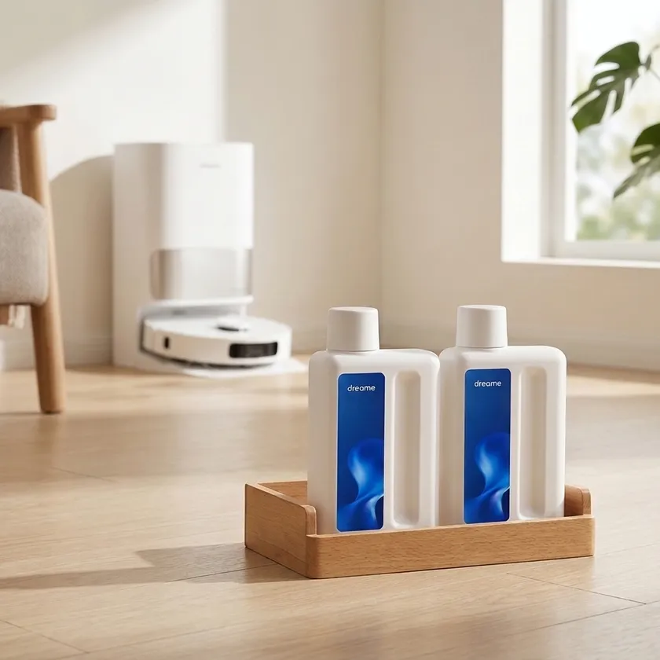

드리미 (Dreame)
드리미 전용 세제 1L 보충·자동 세제함 관리｜1병·2병 복수할인 비교
글·구성: 제이상점 · 기종별 1:1 호환 실물 점검 · 교체 주기 비교표 · 스마트스토어 패키지 안내

핵심 관리 · 선택 체크포인트
- 60~80도 온수로 원형 물걸레를 자동 세척하는 드리미 올인원 로봇청소기를 매일 돌리다
- 자동 세제함 노즐 피막 예방과 드리미 1L 정량 리필 디테일: 드리미 베이스 스테이션의 자동 세제 투입 카트리지는 공기 접촉이 잦은 마개와 노즐 주변에 세정액이 마르면서 얇은 피막이 생길 수 있습니다.
- 아래 상품 메인 이미지를 직접 누르시거나 [제이상점 드리미 정품 전용 클리너 1L 1병·2병 옵션 바로 확인하기]에서 병 라벨 형태와 현재 판매 구성을 먼저 대조해 보세요.
- 드리미 전용 클리너 1L 옵션 및 투입 방식 점검표: 우리 집 드리미 모델의 세제 투입 구조와 바닥 청소 빈도에 맞춰 아래 세 가지 항목을 먼저 체크해 보세요.
- 1L 1병 vs 2병 복수구매할인, 우리 집 청소 빈도별 선택 기준: 드리미 전용 클리너 1L는 500ml 소용량보다
실물 부품 디테일 · 관리 구성 이미지




부품 규격 · 점검 기준표
| 확인 항목 | 세부 구성 · 규격 포인트 | 관리 · 선택 기준 |
|---|---|---|
| 1L - 1병 옵션 | 드리미 정품 전용 세척액 1L 본품 1병 | 주 2~3회 물걸레 가동·스테이션 옆 깔끔한 단병 비치 |
| 1L - 2병 (복수구매할인) | 드리미 정품 전용 세척액 1L 본품 2병 묶음 | 매일 온수 물걸레 가동·예비 1병을 할인 단가로 비축 |
| 카트리지 · 호환 점검 | X40·X50·X60 등 드리미 올인원 라인업 대응 | 주입구 피막 제거·고무 패킹 밀착·보유 모델 설명서 대조 |
💡 교체 주기가 겹치는 필터·브러시·물걸레·더스트백은 단품 배송비를 여러 번 내기보다 드리미 세제 기간별 세트(3개월·6개월·1년)로 미리 구비해 두면 물세척 후 24시간 교대 건조까지 끊김 없이 관리할 수 있습니다.
자주 묻는 질문 (FAQ)
Q. 일반 주방세제나 바닥 다목적 세정제를 소량 희석해서 드리미 세제함에 넣어도 괜찮나요?
A. 일반 세제는 60~80도 온수 세척 과정에서 과도한 거품이 생겨 스테이션 세척판 오수 흡입 센서가 오작동하거나 미세 배관 내부에 점성 잔여물이 쌓일 수 있습니다. 기기 수명과 바닥 미끄러짐 방지를 위해 로봇청소기 전용 저발포 클리너를 사용하고, 투입 전에는 보유 모델 설명서의 카트리지·정수통 투입 방식을 꼭 확인해 주세요.
Q. 드리미 전용 세제 1L의 1L - 1병 옵션 규격과 관리 기준은 무엇인가요?
A. 드리미 정품 전용 세척액 1L 본품 1병 규격을 사용하며, 주 2~3회 물걸레 가동·스테이션 옆 깔끔한 단병 비치 기준으로 점검·교체하면 청소 효율을 안정적으로 유지할 수 있습니다.
Q. 드리미 전용 세제 1L의 1L - 2병 (복수구매할인) 규격과 관리 기준은 무엇인가요?
A. 드리미 정품 전용 세척액 1L 본품 2병 묶음 규격을 사용하며, 매일 온수 물걸레 가동·예비 1병을 할인 단가로 비축 기준으로 점검·교체하면 청소 효율을 안정적으로 유지할 수 있습니다.
제이상점 1:1 검수 추천 패키지 · 구매 안내
![[호환] 드리미 X50s Pro Master 소모품 세제 걸레 1년세트](../../assets/img/dreame-x50s-pro-master-product-18e92aa9.webp)
함께 많이 찾는 보충 구성
대표 구성 참고가 77,000원대 (옵션·쿠폰별 스마트스토어 결제 화면 기준)
1년 세트6개월 세트3개월 세트
☑️ 주문 전 확인해 두면 좋은 제이상점 안심 포인트
· 기종별 1:1 전용 규격 검수: 모델명·연식에 맞는 호환·정품 구성을 검수해 오주문 불안을 줄였습니다.
· 해외직배송 미리 주문 팁: 중국 구매대행·해외직배송 상품이므로 마지막 여분 1개를 꺼내 쓰는 시점에 개인통관고유부호와 함께 여유 있게 주문해 두시면 훨씬 경제적인 비용으로 끊김 없이 교체하실 수 있습니다.
· 기종별 1:1 전용 규격 검수: 모델명·연식에 맞는 호환·정품 구성을 검수해 오주문 불안을 줄였습니다.
· 해외직배송 미리 주문 팁: 중국 구매대행·해외직배송 상품이므로 마지막 여분 1개를 꺼내 쓰는 시점에 개인통관고유부호와 함께 여유 있게 주문해 두시면 훨씬 경제적인 비용으로 끊김 없이 교체하실 수 있습니다.
📖 더 많은 가정 내 사용 스토리와 상세 후기가 궁금하시다면
📱 네이버 블로그 모바일 원문 보기 ↗